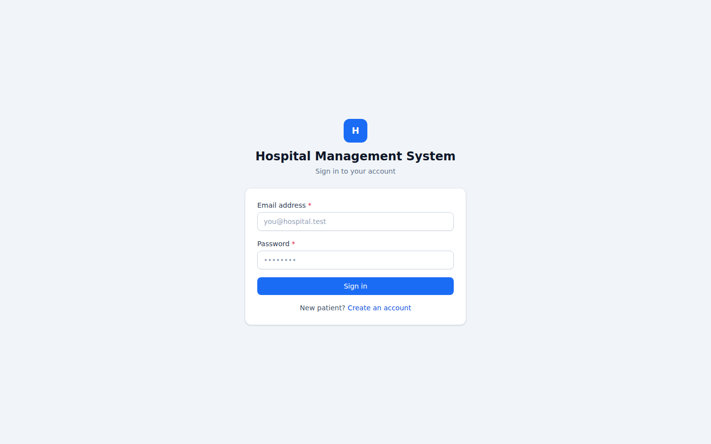
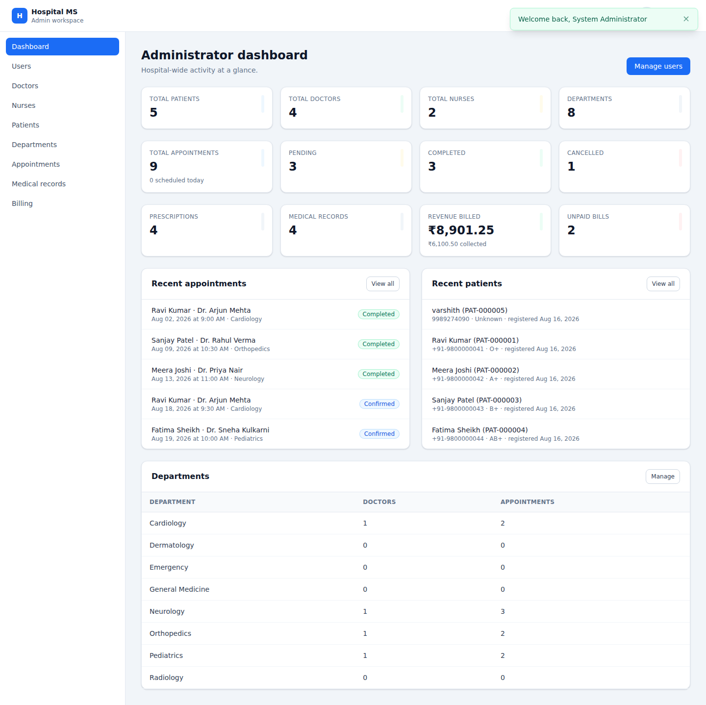
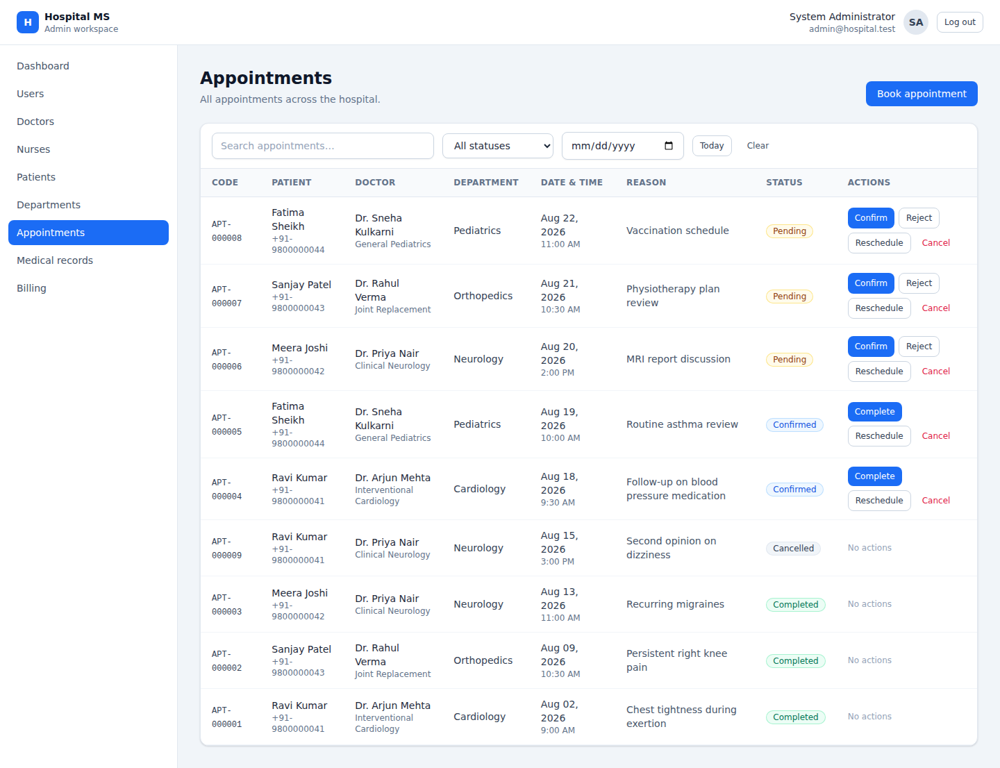

FULL TITLE: Hospital Management System (full-stack) — a role-based hospital operations platform built with Git/GitHub for version control, and Docker & Jenkins for containerized deployment automation.
The Hospital Management System is a full-stack web application built to manage day-to-day hospital operations across five distinct roles — Admin, Doctor, Nurse, Receptionist and Patient. Each role signs in to its own dashboard and sees only the data and actions relevant to it: admins oversee users, doctors and departments hospital-wide; doctors manage their own patients and appointments; nurses assist with patient care; receptionists handle registration and scheduling; and patients book appointments and view their own records.
The application was developed as a demonstration of how a real, data-backed full-stack application can be integrated with modern DevOps practices. The project uses Git and GitHub for source-code management, Node.js/Express for the backend REST API, React for the frontend, and MySQL via the Sequelize ORM as the database — with Docker and Jenkins included in the repository to automate containerized deployment.
The system covers patient records, appointment scheduling with double-booking prevention, prescriptions, medical records and billing. Unlike a JSON-file backed demo, data is persisted in a real MySQL 8 database across nine migrated tables with seeded demo data, and every endpoint is secured with JWT authentication and per-role authorization middleware.
The main objective of the project is not just a UI demo, but to demonstrate the complete lifecycle of a full-stack application from development and version control, through automated testing, to containerized deployment.
| TOOLS | PURPOSE |
|---|---|
| React 18 + Vite | Frontend SPA — component-based UI, dev server |
| React Router | Client-side routing between role dashboards |
| Tailwind CSS | Styling, layout and responsive design |
| Axios | Frontend → REST API communication |
| Node.js | Backend programming |
| Express | REST API and application server |
| Sequelize | MySQL schema modelling, migrations and seeders |
| MySQL 8 | Relational application data storage |
| JWT / bcryptjs | Authentication and password hashing |
| Jest / Supertest | Automated API testing |
| git | Version control |
| github | Remote source code repository |
| docker | Application containerization |
| jenkins | CI/CD automation |
The project is organized into separate frontend, backend, database and deployment components.
The backend directory contains the Express application —
controllers, routes, models, middleware and services. The
frontend directory contains the React user interface. The
database directory contains the Sequelize migrations and
seeders. The Dockerfiles (one per service) define the
container images, while the Jenkinsfile defines the CI/CD
pipeline.
The backend was implemented using Node.js and the Express framework.
The Express application provides REST API endpoints for accessing hospital data. The major endpoints implemented are:
The /api/dashboard endpoint provides aggregated,
role-aware statistics such as total patients, doctors, nurses,
appointments (pending / completed / cancelled), prescriptions, medical
records and billing totals — this is what powers every role's
dashboard screen.
The /api/appointments endpoints prevent double-booking a
doctor for the same slot, and support confirm / reject / complete state
transitions restricted to doctors and admins.
The backend also implements appropriate HTTP responses for invalid IDs. For example, requesting a patient that does not exist produces an HTTP 404 Not Found response rather than causing the application to crash.
The frontend was developed using React 18, Vite and Tailwind CSS.
Each role lands on its own dashboard after login:
When a dashboard is loaded, the React app requests data from the Express REST API via Axios and renders it into live counters and tables.
When a user books, confirms or updates an appointment, the frontend calls the corresponding API endpoint and refreshes the affected views.
This creates a clear separation between the frontend presentation layer and the backend data / API layer.
The application was executed locally and accessed through:
http://localhost:5173
The dashboards, REST APIs, authentication and role-based access were all verified.
A dedicated test suite was created using Jest and Supertest.
The test suite contains 112 automated test cases across 7 suites. The tests verify:
The tests were executed using:
The final test execution produced:
This automated test suite forms the primary Continuous Integration verification step in the Jenkins pipeline (see below).
The project is version-controlled with Git. A private GitHub repository was created and the initial commit pushed to it, so that Jenkins can retrieve the latest version of the project automatically. GitHub also provides a central location for maintaining the source code and the Jenkinsfile.
Repository: github.com/Varshith8999/hospital-management-system (private).
.env, node_modules/ and all credentials are excluded via
.gitignore; only .env.example (a template with no real secrets) is tracked.
Docker was included to package the application into portable containers.
docker-compose.yml defines three services:
mysql — MySQL 8, persistent volume, healthcheckbackend — built from backend/Dockerfile, waits for MySQL's healthcheck, runs migrations + seeders on startfrontend — built from frontend/Dockerfile, served by nginx, proxies /api to the backendThe backend Dockerfile performs the following operations:
/app.package.json and installs production dependencies.database/ migrations and seeders.Intended to be started with:
The repository includes a declarative Jenkinsfile, designed to
connect to the GitHub repository above and run with access to Git, Node.js
and Docker. It defines four stages:
Checkout → Test → Docker Build → Deploy
The Checkout stage retrieves the latest source code from GitHub.
The Test stage is designed to execute the 112-test Jest suite shown above. If a test fails, the pipeline stops.
The Docker Build stage builds the backend and frontend images after successful testing.
The Deploy stage brings the stack up via Docker Compose and is designed to verify the containers are running.
In place of the containerized pipeline above, the application was actually run and verified directly: Node.js 18 and MySQL 8 inside a local Linux (WSL2) environment, migrations and seeders applied against a real MySQL database, then the backend and frontend started and exercised through a real browser session.


/api/dashboard.
The Hospital Management System demonstrates the development of a production-shaped full-stack web application integrated with modern DevOps practices.
The project combines a Node.js/Express REST backend with a React frontend to provide role-based dashboards for hospital operations. MySQL, managed through versioned Sequelize migrations, was used to keep the data model realistic and relational rather than a flat-file demo.
Git and GitHub were used for source-code management and version control, while Jest and Supertest provided 112 automated API tests, all passing. Docker and Jenkins are included in the repository to containerize the application and automate deployment, ready to be executed even though this run verified the application directly via a native Node.js/MySQL setup.
The project demonstrates that CI/CD practices can be applied effectively to a real, data-backed application. Natural next steps include actually executing the Docker Compose stack and the Jenkins pipeline end-to-end, adding HTTPS and production-grade secrets management, and extending the test suite to cover billing and prescription workflows under load.